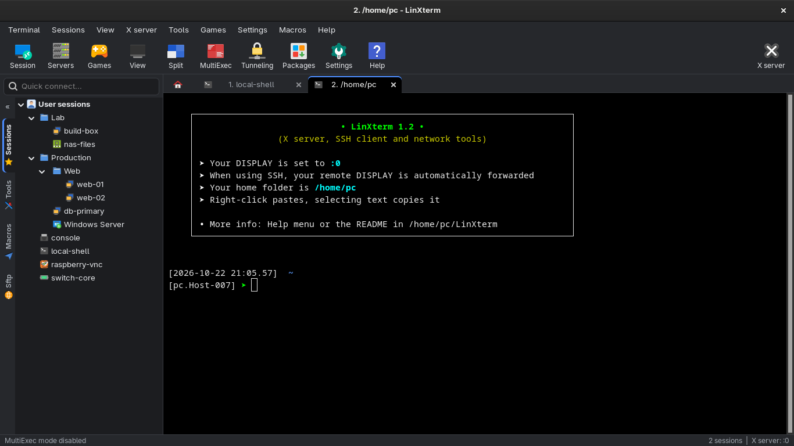
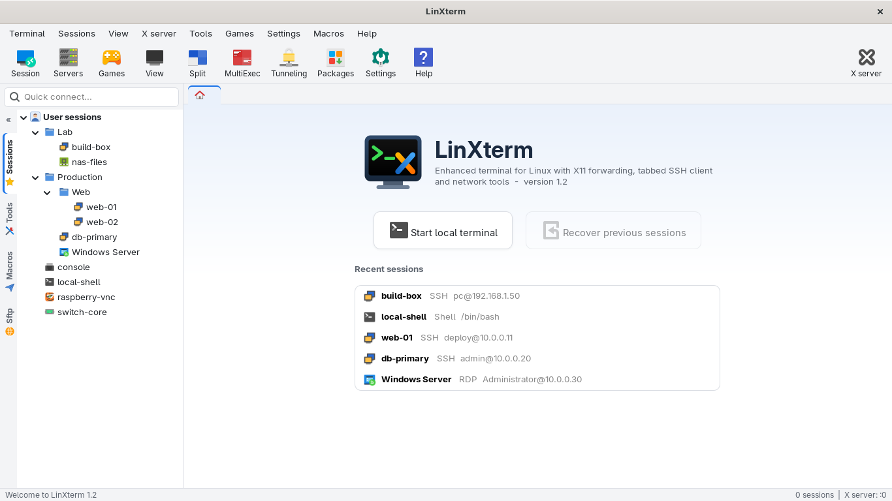
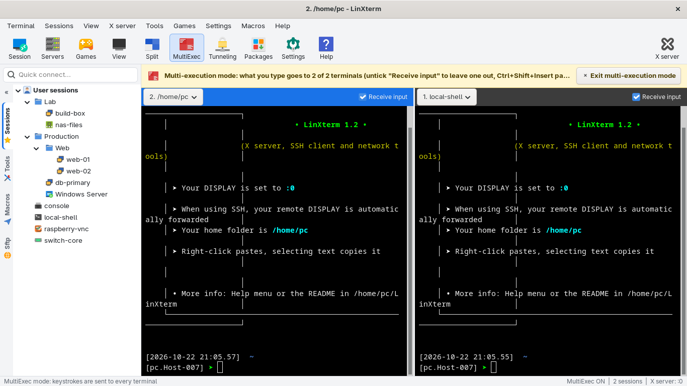
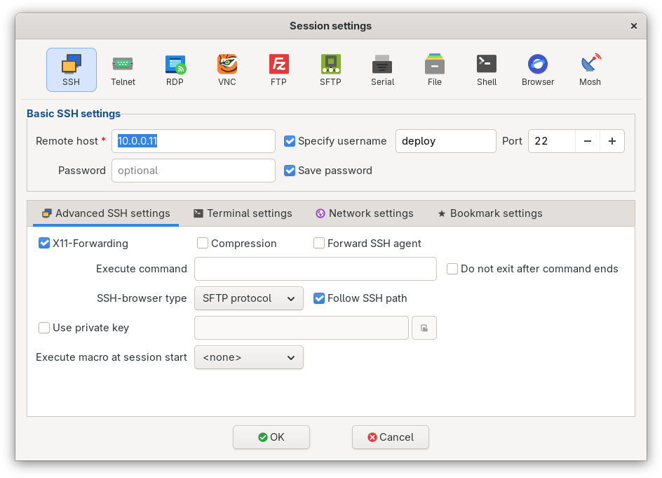
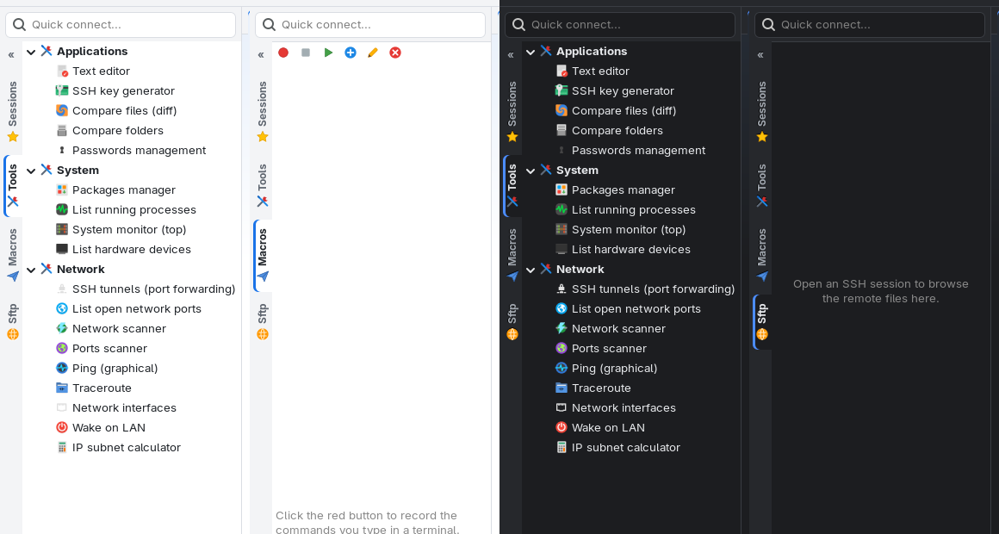
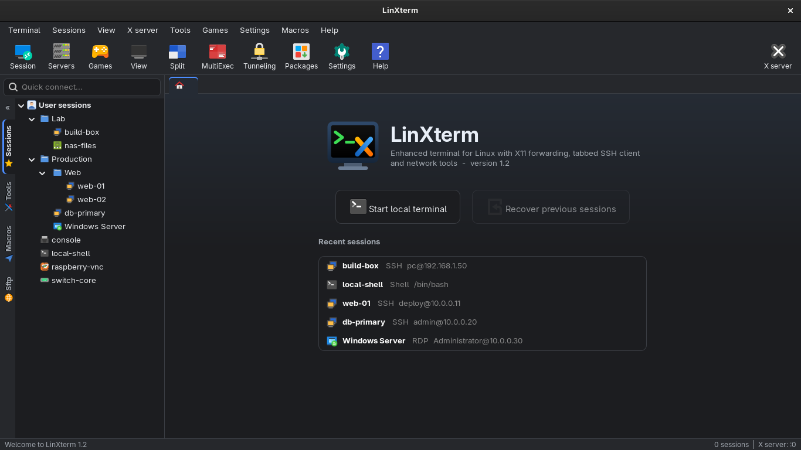

Terminaux à onglets
Terminaux locaux et distants, onglets numérotés, détachables et colorables. La vue Split affiche 2 ou 4 terminaux, et MultiExec tape la même commande sur plusieurs serveurs à la fois.
Logiciel libre pour Linux · version 1.2
LinXterm est un terminal à onglets qui réunit SSH, navigateur SFTP, X11-forwarding, bureau à distance RDP et VNC, outils réseau, serveurs et tunnels SSH. Son interface s'inspire de MobaXterm, en version native pour Linux.

Plus besoin de jongler entre un terminal, un client SFTP, un client RDP et une poignée d'outils réseau.
Terminaux locaux et distants, onglets numérotés, détachables et colorables. La vue Split affiche 2 ou 4 terminaux, et MultiExec tape la même commande sur plusieurs serveurs à la fois.
SSH, Telnet, Mosh, RDP, VNC, FTP, SFTP, port série, shell, fichiers et navigateur web, rangés en dossiers. Mots de passe dans le trousseau du bureau. Import depuis MobaXterm, OpenSSH, PuTTY et Remmina.
X11-forwarding pour afficher les applications graphiques du serveur, passerelle de rebond, clés privées, reconnexion automatique, navigateur SFTP qui suit le terminal et surveillance du serveur (CPU, RAM, disque, réseau).
Scanner réseau et de ports, ping graphique, traceroute, ports ouverts, Wake-on-LAN, calculatrice de sous-réseau, générateur de clés SSH, éditeur de texte, comparaison de fichiers et liste des processus.
Serveurs HTTP, FTP, TFTP, SSH et iperf3 en un clic pour échanger des fichiers sur le réseau local. Tunnels SSH locaux, distants et SOCKS gérés graphiquement, avec démarrage automatique.
Macros, palette de commandes (Ctrl+Maj+P), coloration des erreurs et avertissements, journaux de session, notification à la fin des commandes longues, liens cliquables, thème clair, sombre ou automatique.
Cliquez sur une capture pour l'afficher en grand.





LinXterm fonctionne sur Linux x86_64 avec GTK 3.24 et VTE 0.76 ou plus récent, sous X11 comme sous Wayland (GNOME, KDE Plasma, Xfce, Cinnamon…).
| Distribution | Versions | État |
|---|---|---|
| Fedora | 40 et suivantes | Testé Fedora 44, GNOME |
| Ubuntu, Kubuntu, Xubuntu… | 24.04 LTS et suivantes | Compatible |
| Linux Mint, Pop!_OS, Zorin OS | basées sur Ubuntu 24.04 | Compatible |
| Debian | 13 « trixie » et suivantes | Compatible |
| Arch Linux, Manjaro, EndeavourOS | à jour | Compatible |
| openSUSE | Tumbleweed, Leap 16 | Compatible |
| RHEL, AlmaLinux, Rocky Linux | 10 | Compatible Free Pascal depuis freepascal.org |
« Compatible » : les prérequis sont remplis, mais l'application n'y a pas encore été testée. Non compatibles (VTE trop ancien) : Debian 12, Ubuntu 22.04, Linux Mint 21, RHEL / Alma / Rocky 9 et openSUSE Leap 15. Les processeurs ARM ne sont pas pris en charge.
LinXterm se compile en une minute à partir du code source, sans droits administrateur pour l'installation elle-même.
GTK 3 et VTE sont déjà présents sur les bureaux courants ; aucun paquet de développement n'est nécessaire.
sudo dnf install fpc gtk3 vte291sudo apt install fpc libgtk-3-0 libvte-2.91-0sudo pacman -S fpc gtk3 vte3sudo zypper install fpc libgtk-3-0 libvte-2_91-0Le programme reste dans son dossier ; un lanceur est ajouté au menu des applications et sur le Bureau.
git clone https://github.com/Joss943/linxterm.git
cd linxterm
./install.shCertaines fonctions utilisent des programmes externes s'ils sont installés. Si l'un d'eux manque, LinXterm le signale, et le bouton Packages de la barre d'outils installe le reste.
| Fonction | Programmes ou bibliothèques |
|---|---|
| SSH, SFTP, tunnels | ssh, sftp (OpenSSH), sshpass, mosh |
| Bureau à distance RDP | FreeRDP 3 (xfreerdp3 ou sdl-freerdp3) |
| VNC dans un onglet | GTK-VNC |
| Navigateur web intégré | WebKitGTK 4.1 |
| Coloration syntaxique de l'éditeur | GtkSourceView 4 |
| Mots de passe dans le trousseau | libsecret (GNOME Keyring, KWallet) |
| Outils réseau | nmap, traceroute, iperf3 |
| Comparaison, processus | meld ou kdiff3, htop |
Les gestes essentiels, du premier terminal à la gestion de plusieurs serveurs.
Bouton Start local terminal de l'onglet d'accueil, touche Entrée ou Ctrl+Maj+T.
Tapez utilisateur@serveur, rdp serveur ou
sftp serveur dans Quick connect, en haut à gauche, puis
Entrée. Le champ filtre aussi vos sessions.
Bouton Session, choisissez le type, saisissez le serveur et l'utilisateur. Double-clic dans le panneau Sessions pour l'ouvrir, clic droit pour la modifier ou la ranger.
Avec une session SSH, l'onglet Sftp du panneau latéral affiche les fichiers du serveur : glissez-déposez pour envoyer ou télécharger.
Avec X11-Forwarding coché (par défaut), tapez par exemple gedit
sur le serveur : la fenêtre s'ouvre sur votre bureau.
Split affiche 2 ou 4 terminaux côte à côte ; MultiExec envoie votre saisie à tous. La case Receive input en exclut un.
Boutons Tunneling et Servers de la barre d'outils, onglet Tools du panneau latéral.
Ctrl+Maj+P ouvre la palette : tapez quelques lettres d'une session, d'un onglet ou d'une commande.
Settings pour la police, les couleurs, l'invite et les journaux ; View > Skin pour le thème clair, sombre ou automatique.
| Ctrl+Maj+T | Nouveau terminal local | Ctrl+Maj+N | Nouvelle session |
| Ctrl+Maj+W | Fermer l'onglet | Ctrl+Pg↑ / Pg↓ | Onglet précédent / suivant |
| Ctrl+Maj+C / V | Copier / coller | Ctrl+Maj+F | Rechercher dans le terminal |
| Ctrl+Maj+P | Palette de commandes | Ctrl+Maj+B | Afficher / masquer le panneau latéral |
| F11 | Plein écran | Ctrl+Maj+Q | Quitter |
LinXterm est publié sous licence GPL-3.0. Le code, l'historique et la documentation complète sont sur GitHub.